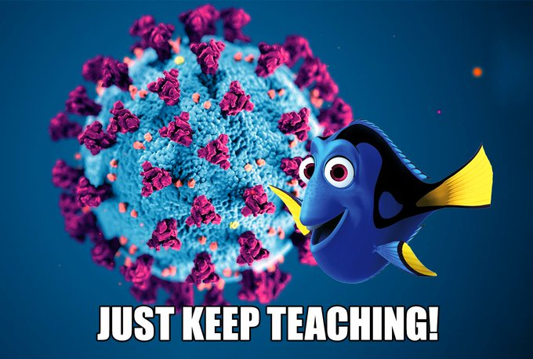

Perspective
- This is a rapid, unexpected change — it isn't going to go perfectly, and it doesn't need to.
- Students may feel anxious. Send organized, proofread announcements quickly, with the important updates and links in one place.
- Effective online teaching means intentionally redesigning a course, not just transferring face-to-face content as-is. Document the conversion on your CV, and look for opportunities to give students activities built around doing rather than passively receiving information.
- Watch for the workload students suddenly face when several courses all assign discussion posts at once. Consider alternative ways for students to interact.
- Set clear expectations about your availability and response time so students don't assume you're reachable around the clock.
General Tips
- Build in grace periods on deadlines (5–8 hours past midnight avoids a flood of "it's 12:01" emails), and leave assignments open longer where you can.
- Keep things ADA compliant: transcribe videos and add alt text to images.
- Give exceptionally clear instructions — explain assignments both in the course module and on the assignment page, with internal links where helpful.
- A common online discussion rhythm: original posts due Sunday at 11:59pm, substantive replies to classmates by Wednesday at 11:59pm — adjust to fit your own schedule.
- Converting a three-hour class online doesn't mean three hours of recorded lecture. Break content into short, single-topic videos and design activities for the time you free up. Simplify grading rubrics where you can (e.g., 5 = complete and thoughtful, 4 = mostly complete with gaps, 0 = not submitted).
- Replace "attendance" with "participation," and convert clicker questions into participation quizzes or discussion prompts.
Instructor Resources
UCF Support
Tools
- TextExpander — grading comment templates
- HandBrake — video conversion
- OBS — screencasting / video recording
- Game & interactive teaching tools, curated by @everestpipkin
Strategies That Helped
- A community discussion board with short (30-word) topics — pet pictures are a reliable way to build connection.
- Short, periodic check-in videos that put a human face on the course rather than relying only on automated messages.
- A quick survey of students' access to resources and materials, so you can offer alternative assignments where needed.
- Encouraging multiple ways to demonstrate a skill, since students don't all have the same equipment at home.
- A zero-point "How are you doing?" quiz question with response-tailored feedback, emphasizing flexibility and that extended deadlines are available.
Student Resources
- UCF operational status
- Comcast Internet Essentials — free basic internet for qualifying households
- Adobe free student downloads (coordinate with university IT)
